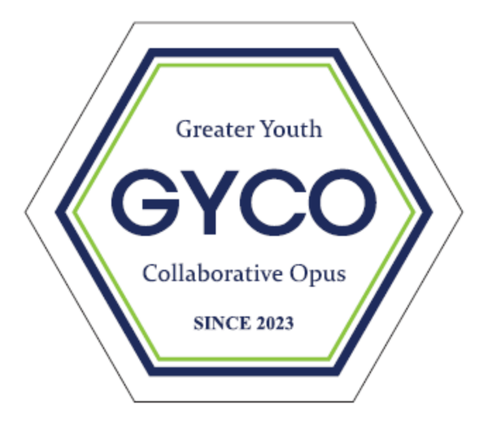

More Than Music.
GYCO — the Greater Youth Collaborative Opus — is a student-led growth community where students learn, create ideas, design projects, and build new change together with their communities. Music is the first tool that begins that change.

It starts with students
At GYCO, the heart of everything is the student. The music, the research, the teaching materials, the videos, the global partnerships — all of it is imagined, created, and carried out by students. They are not just participants here. They grow as:
Music is the first tool that begins the change — not the final destination. Students begin by learning together through rehearsals, education, and performance, then carry the confidence, teamwork, creativity, and leadership they build there into everything else they create.
GYCO is where students discover their gifts. WE ARE WITH YOU is where those gifts become hope for someone else.
WE ARE WITH YOU
The first flagship initiative students created — and continue to grow. Students discover what their communities need, propose new ideas, partner with organizations, and develop and run the programs themselves.
Taps of Love
- Beat & Breeze
- Interactive music
- Rhythm activities
- Ensemble
Winds of Love
- Hospital programs
- Ronald McDonald House
- Senior living
- Community concerts
Voices of Love
- One Message for You
- Hope Capsule
- Storytelling
- Student media
- Video messages
Circle of Love
- Community projects
- Family programs
- Volunteer network
- Partnership programs
New series keep being developed from student ideas. WE ARE WITH YOU is the first flagship initiative — not the last.
What do students create?
GYCO grows as a series of student-built OPUS areas. WE ARE WITH YOU is OPUS 1 — and every OPUS below turns student ideas into real work.
Student Innovation
Creative work that turns student ideas into real, finished results.
- Educational resources — teaching materials & activity books
- Digital content — educational videos, QR & digital content
- Project development — student projects, from idea to launch
Research & Innovation
Inquiry where students study their own programs and make them better.
- Research — program studies, surveys, interviews
- Analysis — data analysis
- Academic collaboration — universities & experts, papers, presentations
- Development — new education & service models
Student Leadership
Leadership that connects school and community.
- Leadership clubs — SHAN & ECHO
- Student Leadership Team & student mentoring
- Service — student-led projects & event planning
Global Collaboration
International partnership where students learn and grow with the world.
- Partners — Philippines, Malawi, South Korea, China
- International schools & global education partners
- Joint global projects
Student Media & Communications
Media work that records the community's story and shares it with the world.
- Student Reporters — event coverage, interviews, articles
- Student Correspondents — news from partners & international projects
- Student Ambassadors — school & community outreach
- Media — photo, video, website, newsletter, social content
Music offered as a gift, not a performance
Established in 2023, GYCO is a 501(c)(3) nonprofit volunteer organization that serves and enriches local communities through talent donations. Members donate their abilities — playing instruments, designing media, organizing events — to support the most vulnerable members of our communities.
GYCO values consistency. By returning to the same communities, students build trust and familiarity. Each visit is approached as a gift — prepared thoughtfully, shared with respect, and built on listening and being present.
That practice became the foundation of WE ARE WITH YOU.
Where GYCO has served
- City of Hope Atlanta (CTCA)
- Senior living communities
- The America Wheat Mission (Milal)
- Veterans — letters, messages, and care packages
- Refugee families, with Friends of Refugees
- Atlanta's homeless community — music and 100 care packages
A WE begins with two people.
I become one of them.
You are not alone.
We are with you.
Students do not stay in the classroom.
They become someone else's "with you."
GYCO is built on the NADO School educational philosophy. Students grow through a repeating cycle —
— and bring what they learn into their communities and the world. WE ARE WITH YOU was the first result. It won't be the last.
Start with an idea. Grow it with a community.
GYCO isn't only about becoming a better musician. It's about becoming a person who can imagine, research, lead, collaborate — and turn an idea into real change for someone else.